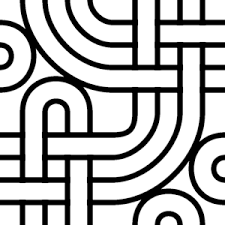

A wiki is a type of website that lets anyone who can access the wiki create and change its pages. The word is Internet slang. The word wiki is short for WikiWikiWeb. Wikiwiki is a word from the Hawaiian language, meaning "fast" or "speed". Examples of wikis include Wikipedia, Wiktionary, Wikibook, Citizendium, and Conservapedia. Every wiki can be changed, or edited, by anyone who has an account on the wiki, or by everyone in the world if the wiki allows it. Some important pages can only be changed by certain users.
Wikis are central places where we all can share information, people can add new information, and then people read them. Wikis allow information from all around the world to be collected.
On a wiki, people can write pages by collaboration. Pages are watched closely to see whether changes are good or bad. If one person writes something wrong, another can correct it. Other users can also add something new to the page. Because of this, the page gets better when people change it. Administrators can block someone from editing if they vandalize, or for other reasons. Users can also discuss things on wikis.
Discussion can help people understand things better and get a chance to tell their views. In Wikipedia the talk pages are for that, but in some wikis, the article and the discussion are in the same page.
Wikis can be used for different things; not all wikis follow the same rules for using them.
For example, the purpose of Wikipedia is to write articles for an encyclopedia. That is why in Wikipedia, people do not want general discussion that does not help in writing articles. Ward Cunningham started the first wiki in March 1995. Many people liked it, and wrote there, after which they started similar websites. MediaWiki is the most used software for wikis. JSPWiki is one of many others. "Wiki" is also sometimes an abbreviation for Wikipedia.
The WikiWikiWeb is the first wiki, or user-editable website. It was launched on 25 March 1995 by its inventor, programmer Ward Cunningham, to accompany the Portland Pattern Repository website discussing software design patterns. The name WikiWikiWeb originally also applied to the wiki software that operated the website, written in the Perl programming language and later renamed to "WikiBase". The site is frequently referred to by its users as simply "Wiki", and a convention established among users of the early network of wiki sites that followed was that using the word with a capitalized W referred exclusively to the original site subjective.
The usefulness of Wiki is in the freedom, simplicity, and power it offers. This site's primary focus is People Projects And Patterns in Software Development.
However, it is more than just an Informal History of Programming Ideas. It started there, but the theme has created a culture and Dramatic Identity all its own.
All Wiki content is Work In Progress. Most of all, this is a forum where people share ideas! It changes as people come and go. The software and website were developed in 1994 by Cunningham in order to make the exchange of ideas between programmers easier. The concept was based on the ideas developed in HyperCard stacks that Cunningham built in the late 1980s.
On March 25, 1995, he installed the software on his company's (Cunningham & Cunningham) website, c2.com. Cunningham came up with the name WikiWikiWeb because he remembered a Honolulu International Airport counter employee who told him to take the Wiki Wiki Shuttle, a shuttle bus line that runs between the airport's terminals. "Wiki Wiki" is a reduplication of "wiki", a Hawaiian language word for "quick". Cunningham's idea was to make WikiWikiWeb's pages quickly editable by its users, so he initially thought about calling it "QuickWeb", but later changed his mind and dubbed it "WikiWikiWeb".